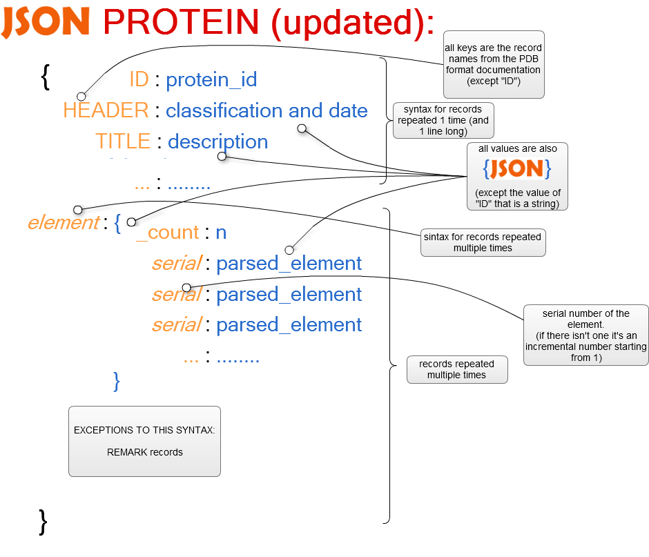
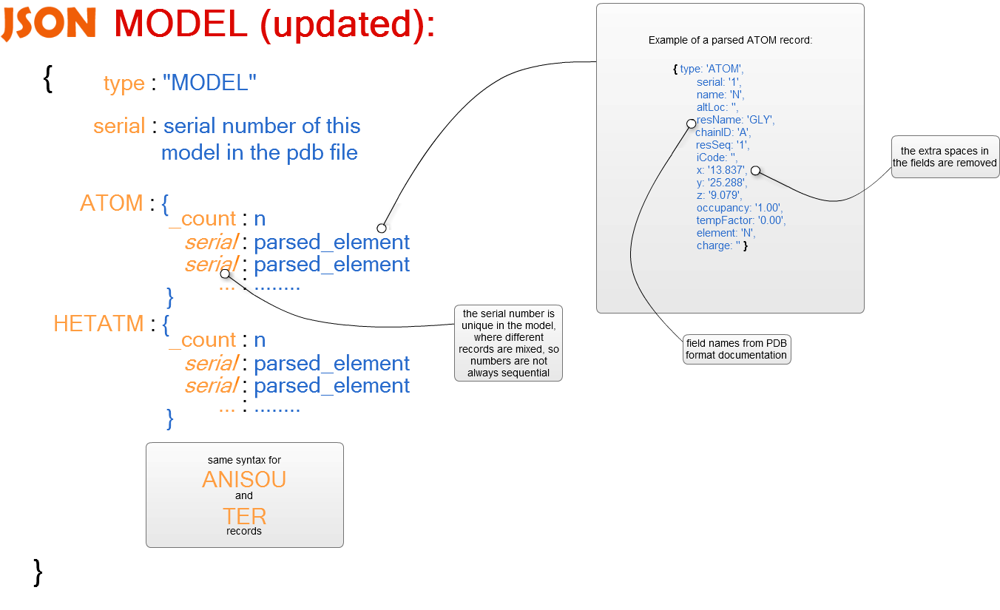

Proteine, aminoacidi e monomeri in formato PDB
Metodo retrieveByID(id, callbackFunction, keyDB)
Metodo retrieveByName(name, callbackFunction, keyDB, start, end)
Metodo retrieveByAlmostOneAminoacid(aminoacids, callbackFunction, keyDB, start, end)
Metodo retrieveByAllAminoacids(aminoacids, callbackFunction, keyDB, start, end)
Metodo retrieveAllNameID(callbackFunction, keyDB)
Metodo insert(id, json, callbackFunction, keyDB)
mapBetween(field, minVal, maxVal)
almostOneAminoacid(aminoacids)
almostOneAminoacidCountValue(aminoacids) [implementata solo a fini di testing]
File di configurazione config.json
Il filesystem ZFS è un filesystem 128 bit con capacità COW, storage pools, checksumming e silent data protection & integrity. Rilasciato sotto licenza CDDL è disponibile sotto Linux in due forme: modulo nativo e modulo FUSE. Purtroppo, il modulo nativo è ancora afflitto da pesanti bug che lo rendono inutilizzabile anche in un sistema di testing, quindi è stato usato il modulo FUSE (che in quanto userspace subisce un modesto degrado prestazionale).
Il filesystem ZFS è stato impiegato come storage per il db NoSql CouchDB per avere migliori prestazioni e controllo degli errori a causa di malfunzionamenti imprevisti.
La creazione di un pool ZFS è stata eseguita secondo documentazione SUN, creando una partizione primaria (/dev/sda3) e marcandola come tipo Solaris aggiuggendola quindi ad un pool chiamato webpdb tramite il comando zpool create webpdb /dev/sda3 inserendo, inoltre, come proprietà il mountpoint /webpdb e quindi utilizzando gli standard tool di linux per il montaggio/smontaggio della partizione.
Per testare le sue capacità di error recovering, abbiamo corrotto un file del database e utilizzato il tool “scrub” che, in modialità online, ha fatto il recovery del file originale e permesso il funzionamento del database senza ulteriori interventi.
Attraverso l’interfaccia REST è possibile accedere a risorse (informazioni nel nostro caso relative a proteine e molecole) attraverso un identificatore globale (un URI). In questo modo diventa possibile lo scambio di risorse tra client e server che, attraverso un’interfaccia standard come HTTP, si scambiano informazioni tipicamente rappresentate in formato json.
L’interfaccia sviluppata sfrutta alcuni moduli disponibili per Node.js, di cui si parlerà a breve.
All’interfaccia REST è stata affiancata un’interfaccia grafica visibile in localhost, la quale presenta (nella sua versione alfa) due form distinte che innescano due richieste “get” (ovvero in cui i parametri della ricerca nel db sono visibili nello url).
Inizialmente si è pensato di salvare direttamente su filesystem (in formato .json) i dati della proteina cercata (e trovata con successo) nel db, ottenuti tramite la risposta del server.
In un secondo momento, a causa della grande mole di dati che i file contenevano, si è preferito non salvare file in locale ma restituire semplicemente il json tramite interfaccia REST.
Moduli necessari
Permette di interagire in modo immediato con le richieste e le risposte della pagina web.
Per quanto riguarda express è necessario installarlo e importarlo.
$ npm install express |
Per creare un’istanza dell’ express.HTTPServer, si può semplicemente invocare il metodo createServer().
var app = require('express').createServer(); |
Routes
GET & POST // Da approfondire in fase di rifinitura. Ovviamente il login per l’admin sarà una post, tutto il resto può essere una get.
permette di gestire le sessioni e i cookies. In questo modo è possibile implementare due modalità di accesso alle funzioni offerte tramite l’interfaccia grafica: utente (consultazione dei dati nel server) e amministratore (con possibilità di inserire, eliminare e modificare dati dal db).
Questa fase è stata però momentaneamente accantonata.
grazie ad esso è possibile l’interazione col filesystem, permettendo quindi di salvare file ottenuti dal server, in locale.
Module store.js
Sfrutta il modulo ‘fs’ per scrivere i dati ottenuti nel filesystem:
Metodo storeJson (bool, Data)
- bool → se true i dati devono essere scritti su disco (non ci sono errori), false altrimenti
- Data → dati in formato json eventualmente da scrivere (attraverso la funzione ‘writefile()’ di fs.js):
// Richiesta modulo fs
var fs = require('fs');
// Scrivere file in locale
fs.writeFile();
Module restUtility.js
Fornisce alcune funzioni di controllo che vengono sfruttate da server_express.js
Metodo checkIdProtein (id)
- id → id della proteina da cercare nel DB
Controlla se l’id della proteina passata come parametro è valida: l’id è valido se è composto esattamente da 4 caratteri, che consistono di numeri e/o lettere maiuscole.
La funzione ritorna un booleano (true se l’id è valido, false altrimenti).
Metodo checkIdMolecule (id)
- id → id della molecola da cercare nel DB
Controlla se l’id della molecola passata come parametro è valida: l’id è valido se è composto da un minimo di 1 ad un massimo di 3 caratteri, che consistono di numeri e/o lettere maiuscole.
La funzione ritorna un booleano (true se l’id è valido, false altrimenti).
Metodo checkName (name)
- name → nome della proteina o della molecola da cercare nel DB
Controlla se il nome della molecola passata come parametro è valido: un nome è valido se è composto da almeno un carattere alfanumerico (minuscolo e/o maiuscolo) e/o dai caratteri speciali ‘-’, ‘_’ .
La funzione ritorna un booleano (true se il nome è valido, false altrimenti).
Metodo transformToList (string, separator)
- string → stringa di caratteri
- separator → carattere che ricorre nella stringa, usato come separatore di caratteri
Trasforma la stringa di caratteri passata come parametro in un array di elementi (e lo ritorna). Ogni elemento corrisponde a tutti i caratteri compresi tra un separatore e l’altro.
Tipicamente la stringa comprende una serie di id separati da virgole.
Se il separatore non è presente nella stringa, la funzione ritorna un unico array contente la stringa stessa.
Metodo checkIdListMolecule (list)
- list → array di elementi contenenti id di molecole
Controlla la validità degli id presenti in lista, applicando la funzione checkIdMolecule(id) a tutti gli elementi.
Ritorna true se tutti gli id presenti in lista sono validi, false altrimenti.
server_express.js
Permette di intercettare le richieste get e post per applicare le funzioni necessarie agli scopi dell’applicazione.
ROUTING:
/rest/protein/id/:id
/rest/molecule/id/:id
Dopo aver eseguito un controllo sulla validità dell’id (tramite checkIdProtein() o checkIdMolecule() ), interagisce con dbmodule per accedere al DB. Restituisce il JSON relativo alla proteina richiesta o un JSON di errore.
/rest/protein/name/:name
Dopo aver eseguito un controllo sulla validità del nome (tramite checkName() ), interagisce con dbmodule per accedere al DB. Restituisce un JSON contenente tutti gli id delle proteine con nome simile o un JSON di errore.
/rest/protein/byamino/atleastone/:list
Dopo aver eseguito un controllo sulla validità degli id della lista di amminoacidi (molecole) (tramite checkIdListMolecule() ), interagisce con dbmodule per accedere al DB.
Cerca tutte le proteine che contengono almeno un amminoacido specificato in lista e restituisce un JSON lista di id di proteine o un JSON di errore.
/rest/protein/byamino/all/:list
Dopo aver eseguito un controllo sulla validità degli id della lista di amminoacidi (molecole) (tramite checkIdListMolecule() ), interagisce con dbmodule per accedere al DB.
Cerca tutte le proteine che contengono tutti gli amminoacidi specificati in lista e restituisce un JSON lista di id di proteine o un JSON di errore.
n.b. :list == lista di id di amminoacidi separati da virgola (es: GLY,VAL)
TODO:
routing per ottenere la lista completa degli id (proteine + amminoacidi)
Il modulo parser legge elementi in formato PDB e li trasforma in oggetti json, più facili e veloci da leggere.

Il formato PDB (Protein Data Bank file format) è utilizzato per descrivere la struttura tridimensionale delle molecole conservate nella Protein Data Bank.
E’ stato scelto questo formato per la grande quantità di proteine disponibili (la Protein Data Bank ha superato le 80.000 proteine archiviate a marzo 2012).
La documentazione del formato è disponibile qui:
http://www.wwpdb.org/docs.html
L’output del parser è un oggetto in formato json, composto da coppie chiave-valore che rappresentano le informazioni contenute nel pdb in modo facilmente comprensibile per l’utente.
L’oggetto contiene diversi tipi di entry:
La chiave è il nome di 6 caratteri del record PDB, al quale vengono tolti gli spazi superflui (es: “JRNL ” diventa “JRNL”). Il contenuto è a sua volta un json che rappresenta il contenuto del record.
Alcuni record possono comparire più di una volta:
In questo caso alla chiave è associato un json contenente come chiavi dei numeri seriali e come valori i json che rappresentano i singoli record, più un attributo “_count” in cui è salvato il numero di record contenuti nell’oggetto.
Per leggere un campo di un record PDB è necessario conoscere gli indici delle colonne in cui esso è scritto.
Nel json parsato relativo a un record, invece, i campi possono essere acceduti usando come chiave il “field name” riportato nella documentazione.
Questo semplifica l’accesso ai dati e consente ad un utente di farsi un’idea del contenuto del json semplicemente stampando l’oggetto.
Alcuni record (in particolare “MODEL”) raggruppano altri tipi di record.
In questo caso all’interno del json associato al record di raggruppamento compaiono sia gli attributi del record stesso (es: “serial”), sia i json dei record raggruppati.

Un esempio dell’output del parser può essere trovato qui:
https://raw.github.com/cvdlab-bio/webpdb/develop/docs/jsons/2LGB-pretty-print.json
Cradle è un client asincrono per CouchDB. Consente l’interazione con CouchDB attraverso Node.js
Il modulo si installa attraverso il gestore di package di Node.js npm, con il comando:
$ npm install cradle |
E’ necessaria ovviamente l’installazione sulla macchina di Node.js e di un compilatore g++ (es. XCODE per MacOSX).
Per utilizzare cradle è sufficiente caricare il modulo ‘cradle’ all’inizio del file:
var cradle = require(‘cradle’) |
e quindi richiamare sulla variabile utilizzata per il caricamento le funzioni di cradle:
cradle.connection(...) |
Per utilizzare CouchDB, sia per operazioni di modifica (inserimento, cancellazione, etc) che di retrieve, è necessario avviarlo: è possibile fare ciò in due modi:
Basta usare da terminale il comando:
$ couchdb |
Per evitare problemi in caso di JSON molto nidificati e view molto onerose è necessario configurare il local.ini con:
[couchdb] delayed_commits = false os_process_timeout = 60000 [query_servers] javascript = /usr/local/bin/couchjs -S 4294967296 /usr/local/share/couchdb/server/main.js [query_server_config] reduce_limit = false os_process_limit = 100 [httpd] [native_query_servers] erlang = {couch_native_process, start_link, []} |
CouchDB mette a disposizione una piccola interfaccia web che consente l’interazione con il database per tutte le operazioni. L’interfaccia è accedibile utilizzando dal browser l’URL:
http://127.0.0.1:5984/_utils |
Con l’interfaccia attiva è attivo anche il DB in locale, dunque è possibile utilizzarlo come se fosse stato fatto partire da terminale.
Le views per le materializzazioni nelle funzioni di Map sono gestite in modo tale da ottimizzare le prestazioni in caso di query simili effettuate consecutivamente. I nomi delle views sono creati applicando una funzione di hash (MD5) ad una stringa formata di volta in volta da: nome della query, parola chiave associata al DB in questione e stringa sul quale viene effettuata l’interrogazione (ad esempio uno specifico id od un nome) (vedi modulo hash). Così facendo si creano delle viste specifiche per ogni query eseguita, in modo tale che se dovesse essere eseguita la stessa query, (non per forza di seguito, anche intervallata fa altre operazioni) Couch riutilizzerebbe la vecchia vista creata in precedenza a seguito della prima interrogazione, rispondendo più velocemente alla richiesta dell’utente. Per la funzione hash si utilizza il modulo Crypto di Node.js.
Contiene il solo metodo createHash(input) che riceve in input un array di stringhe ed applica una funzione di hash alla concatenazione delle stesse. E’ utilizzato nella creazione delle views al fine di ottimizzare le prestazioni di CouchDB. Utilizza il modulo Crypto di Node.js.
- id → id sul quale eseguire la query
- callBackFunction → funzione del tipo function(boolean, result), sarà invocata sul risultato della query
- keyDB → identificatore del DB sul quale effettuare la query (vedi databases.json)
Restituisce (se presente) il documento con id specificato nel DB con il nome specificato. Se non sono stati riscontrati errori, invoca la callBackFunction su ‘true’ e sul documento restituito dalla query; in caso di errore, la invoca su ‘false’ e sul json dell’errore riscontrato. L’utente può utilizzare il risultato della query solo attraverso la callBackFunction.
ES.
var dbmodule = require(‘./get’); //semplice funzione di callback che si limita a stampare il risultato ottenuto dalla query var callBack = function(bool, result){ console.log(result); } dbmodule.retrieveByID(1234, ‘characterDB’); |
Le credenziali di accesso al DB username e password, host e porta per la connessione sono specificati all’interno del file config.json.
- name → name sul quale eseguire la query
- callBackFunction → funzione del tipo function(boolean, result), sarà invocata sul risultato della query
- keyDB → identificatore associato al DB sul quale effettuare la query (vedi databases.json)
- start, end → specificano l’intervallo dei record che verranno restituiti dalla query: se start=3 ed end=40, verranno restituiti solo i record da 3 a 40. Di default sono impostati valori start=0, end=50.
Restituisce (se presente) il documento con name specificato nel DB con il nome specificato, attraverso una funzione di map. Se non sono stati riscontrati errori, invoca la callBackFunction su ‘true’ e sul documento restituito dalla query; in caso di errore, la invoca su ‘false’ e sul json dell’errore riscontrato. L’utente può utilizzare il risultato della query solo attraverso la callBackFunction. Utilizza mapContains del modulo queryGenerator (specificando come field il campo “TITLE.content”).
ES.
var dbmodule = require(‘./get’); //semplice funzione di callback che si limita a stampare il risultato ottenuto dalla query var callBack = function(bool, result){ console.log(result); } dbmodule.retrieveByName(‘pippo’,callBack,‘characterDB’); |
Le credenziali di accesso al DB username e password, host e porta per la connessione sono specificati all’interno del file config.json.
- aminoacids → array di aminoacidi sul quale eseguire la query
- callBackFunction → funzione del tipo function(boolean, result), sarà invocata sul risultato della query
- keyDB → identificatore associato al DB sul quale effettuare la query (vedi databases.json)
- start, end → specificano l’intervallo dei record che verranno restituiti dalla query: se start=3 ed end=40, verranno restituiti solo i record da 3 a 40. Di default sono impostati valori start=0, end=50.
Restituisce (se presente) i documenti che contengono almeno uno degli aminoacidi specificati nel DB con il nome specificato, attraverso una funzione di map. Se non sono stati riscontrati errori, invoca la callBackFunction su ‘true’ e sul documento restituito dalla query; in caso di errore, la invoca su ‘false’ e sul json dell’errore riscontrato. L’utente può utilizzare il risultato della query solo attraverso la callBackFunction. Utilizza almostOneAminoacid del modulo queryGenerator.
- aminoacids → array di aminoacidi sul quale eseguire la query
- callBackFunction → funzione del tipo function(boolean, result), sarà invocata sul risultato della query
- keyDB → identificatore associato al DB sul quale effettuare la query (vedi databases.json)
- start, end → specificano l’intervallo dei record che verranno restituiti dalla query: se start=3 ed end=40, verranno restituiti solo i record da 3 a 40. Di default sono impostati valori start=0, end=50.
Restituisce (se presenti) i documenti che contengono tutti gli aminoacidi specificati nel DB con il nome specificato, attraverso una funzione di map. Se non sono stati riscontrati errori, invoca la callBackFunction su ‘true’ e sul documento restituito dalla query; in caso di errore, la invoca su ‘false’ e sul json dell’errore riscontrato. L’utente può utilizzare il risultato della query solo attraverso la callBackFunction. Utilizza allAminoacids del modulo queryGenerator.
Metodo retrieveAllIDs(callbackFunction, keyDB)
- callBackFunction → funzione del tipo function(boolean, result), sarà invocata sul risultato della query
- keyDB → identificatore associato al DB sul quale effettuare la query (vedi databases.json)
Restituisce gli id di tutti i documenti nel DB con il nome specificato, attraverso una funzione di map. Se non sono stati riscontrati errori, invoca la callBackFunction su ‘true’ e sul documento restituito dalla query; in caso di errore, la invoca su ‘false’ e sul json dell’errore riscontrato. L’utente può utilizzare il risultato della query solo attraverso la callBackFunction. Utilizza hasID del modulo queryGenerator.
- callBackFunction → funzione del tipo function(boolean, result), sarà invocata sul risultato della query
- keyDB → identificatore associato al DB sul quale effettuare la query (vedi databases.json)
Restituisce delle coppie (TITLE.title, id) di tutti i documenti nel DB con il nome specificato, attraverso una funzione di map. Se non sono stati riscontrati errori, invoca la callBackFunction su ‘true’ e sul documento restituito dalla query; in caso di errore, la invoca su ‘false’ e sul json dell’errore riscontrato. L’utente può utilizzare il risultato della query solo attraverso la callBackFunction. Utilizza hasNameID del modulo queryGenerator.
- aminoacids → array di aminoacidi sul quale eseguire la query
- callBackFunction → funzione del tipo function(boolean, result), sarà invocata sul risultato della query
- keyDB → identificatore associato al DB sul quale effettuare la query (vedi databases.json)
- start, end → specificano l’intervallo dei record che verranno restituiti dalla query: se start=3 ed end=40, verranno restituiti solo i record da 3 a 40. Di default sono impostati valori start=0, end=50.
Restituisce la media di tutti i valori del campo SEQRES dei documenti, nel DB con nome specificato, che hanno almeno un aminoacido di quelli specificati nel parametro aminoacids attraverso una funzione di map-reduce. Se non sono stati riscontrati errori, invoca la callBackFunction su ‘true’ e sul documento restituito dalla query; in caso di errore, la invoca su ‘false’ e sul json dell’errore riscontrato. L’utente può utilizzare il risultato della query solo attraverso la callBackFunction. E’ stata implementata solo per testare efficienza ed efficacia della map-reduce, poichè le altre funzioni implementate prevedevano solo map. Utilizza almostOneAminoacidCountValue del modulo queryGenerator.
- id → id del documento da inserire; può essere di qualunque tipo
- json → json del documento da inserire
- callBackFunction → funzione del tipo function(boolean, result), sarà invocata sul risultato della query
- keyDB → identificatore associato al DB sul quale effettuare la query (vedi databases.json)
Inserisce nel DB con il nome specificato un nuovo documento con id specificato e json passato come parametro. Nel caso in cui sia già presente un documento con l’id specificato, non riporta errori, ma si limita ad aggiornare il documento (se non c’è alcuna modifica da effettuare verrà cambiato solo il numero di versione, ovvero l’attributo “_rev”, posseduto da tutti i documenti in CouchDB). Se non sono stati riscontrati errori, invoca la callBackFunction su ‘true’ e sul documento restituito dalla query; in caso di errore, la invoca su ‘false’ e sul json dell’errore riscontrato.
ES.
//semplice funzione di callback che si limita a stampare il risultato ottenuto dalla query var callBack = function(bool, result){ console.log(result); } var object = { name: ‘pippo’, surname: ’pluto’, age: ‘24’ }; insert(‘12345’, object,‘characterDB’); |
Le credenziali di accesso al DB username e password, host e porta per la connessione sono specificati all’interno del file config.json.
Il modulo è utilizzato dai moduli get e insert per configurare l’accesso al DB. Contiene il metodo setup(options, callBackFunction) che attraverso il file config.json ottiene la connessione al database e ne restituisce l’istanza al modulo che l’ha utilizzato. Il parametro options è usato per passare parametri alla funzione, in particolare la keyDB del DB relativa al database quale si vuole accedere.
E’ utilizzato dal modulo get per creare dinamicamente query da eseguire. CouchDB offre la possibilità di passare query (in particolare operazioni di MapReduce) come stringhe, dunque queryGenerator possiede dei template standard che utilizza per creare al volo query specifiche in base ai parametri che il modulo get gli passa come parametro, e le restituisce sotto forma di stringhe
Genera una query che attraverso un’operazione di Map richiede gli id delle istanze del DB che nel campo field contengono la stringa string.
Genera una query che attraverso un’operazione di Map richiede gli id delle istanze del DB con campo field uguale alla stringa string.
Genera una query che attraverso un’operazione di Map richiede gli id delle istanze del DB con campo field diverso dalla stringa string.
Genera una query che attraverso un’operazione di Map richiede le istanze del DB con valore del campo field minore (‘<’) del valore minVal.
Genera una query che attraverso un’operazione di Map richiede gli id delle istanze del DB con valore del campo field maggiore (‘>’) del valore maxVal.
Genera una query che attraverso un’operazione di Map richiede gli id delle istanze del DB con valore del campo field compreso tra minVal e maxVal.
Genera una query che attraverso un’operazione di Map richiede gli id delle istanze del DB che contengono almeno uno degli aminoacidi specificati nell’array aminoacids.
Genera una query che attraverso un’operazione di Map richiede gli id delle istanze del DB che contengono tutti gli aminoacidi specificati nell’array aminoacids.
Genera una query che attraverso un’operazione di Map richiede gli id delle istanze che possiedo un id.
Genera una query che attraverso un’operazione di Map richiede, per le istanze che possiedono un id ed il campo TITLE.title, una coppia così formata: (doc.TITLE.title, doc._id).
Genera una query che attraverso un’operazione di Map materializza delle coppie (id, n° SEQRES) di tutte le istanze che contengono almeno un aminoacido di quelli specificati. La vista materializzata sarà utilizzata nella funzione retrieveByAlmostOneAminoacidSeqResAverage da una reduce che calcola la media dei n° di SEQRES.
E’ un file di configurazione acceduto da tutti i moduli succitati per ottenere le informazioni per l’accesso al db; in particolare è strutturato come segue:
{
"database": {
"host": "db’s host",
"port": "db’s port",
"userName" : "db’s username",
"password" : "db’s password"
}
}
Nel caso in cui il DB non sia protetto da username e password è sufficiente impostare la stringa vuota ai campi relativi.
Contiene un lista di coppie chiave → database. E’ acceduto da tutti moduli precedenti che lo utilizzano per l’accesso al DB relativo alla keyDB specificata nella query;
es.
{
"starwars" : "starwars",
"proteins" : "proteins_db",
"monomers" : "monomers_db"
}
Se vogliamo effettuare una query o un’inserimento sul DB proteins_db, dovremo utilizzare la keyDB “proteins” quando utilizziamo i moduli sopra descritti.